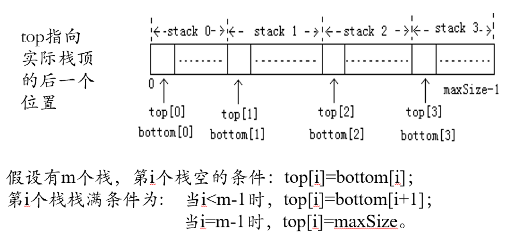

数据结构复习-第二部分
本系列文章为作者复习数据结构过程中的知识点总结、速通，欢迎补充
Written by SJTU-XHW
Reference: 张同珍老师 PPT | UNIkeEN
注：默认定义异常类型noElementException：
1 | class noElementException { |
Chapter 3 栈
3.1 零碎概念集合
栈的地位：一种特殊的（后进先出，LIFO）的线性表，仅允许在一端插入、同一端删除；
栈底、栈顶、空栈、进栈/压栈、出栈/弹栈的定义；
栈的基本运算：创、进出、读头、判空；
时间有序表：因为栈的元素关系和离开、到达的时间有关，所以栈又被称为时间有序表
3.2 栈的顺序实现
存储实现：数组模拟栈，idx=0为栈底；【数组头指针、规模数、栈顶位置】
注意：栈顶位置数的地方存放有效数据，所以空栈的栈顶位置习惯为-1；
运算实现：过于简单，一笔带过
1
2
3
4
5
6
7
8
9
10
11
12
13
14
15
16
17
18
19
20
21
22
23
24
25
26
27
28
29
30
31
32
33
34
35
36template <class T>
class seqStack {
private:
T* data;
int maxSize;
int topIdx;
void doubleSpace() {
T* tmp = data;
data = new T[maxSize * 2];
for (int i = 0; i <= topIdx; ++i)
data[i] = tmp[i];
delete[] tmp; maxSize *= 2;
}
public:
seqStack(int capacity=10) {
data = new T[capacity];
maxSize = capacity; topIdx = -1;
}
~seqStack() { if (data) delete[] data; }
bool isempty() const { return topIdx == -1; }
// 时间复杂度均摊分析：平均 O(1)
void push(const T& dt) {
if (topIdx == maxSize - 1) doubleSpace();
data[++topIdx] = dt;
}
T pop() {
if (topIdx == -1) throw noElementException();
return data[topIdx--];
}
T top() const {
if (topIdx == -1) throw noElementException();
return data[topIdx];
}
};
3.3 顺序栈的变种：共享栈
为了提高空间利用率，在某些实际问题中使用多个数据类型相同的栈时，在一块连续的空间中设置多个栈共享空间，其中每个栈有连续的小空间，如图所示。
提示：对栈操作的函数会添加一个整型参数指定究竟对谁操作

3.4 栈的链接实现
存储实现：所有操作在栈顶完成——无需头结点的单链表；【栈顶指针】
运算实现：解说略；
1
2
3
4
5
6
7
8
9
10
11
12
13
14
15
16
17
18
19
20
21
22
23
24
25
26
27
28
29
30
31
32
33
34
35template <class T>
class linkStack {
private:
struct node {
T data;
node* next;
node() { next = 0; }
node(const T& dt, node* n=0)
: data(dt), next(n) {}
};
node* top;
public:
linkStack() { top = nullptr; }
~linkStack() {
while (top) {
node* tmp = top;
top = top->next;
delete[] tmp;
}
}
bool isempty() const { return top == nullptr; }
void push(const T& dt) {
top = new node<T>(dt, top);
}
T pop() {
if (top == nullptr) throw noElementException();
T ans = top->data;
node* tmp = top;
top = top->next; delete tmp;
}
T getTop() const {
if (top == nullptr) throw noElementException();
return top->data;
}
};
3.5 栈的应用
判断回文序列
手动消除递归
经典例题：Ackerman 函数非递归求解、非递归快速排序
1
int Ackerman(int m, int n); // 允许使用 seqStack 类
具体思路：定义栈中的元素类型为保存m、n两个数的结构体（可以使用C++内置STL pair），先将A(m, n)作为一个元素放入栈中开始循环，循环判断栈非空进入，每次弹出一个元素计算。
如果 m > 0 且 n = 0，那么构建新的元素A(m-1, 1)放进栈中；
如果 m > 0 且 n > 0，那么不妨把用不到的负数 -1 作为未计算的结果代替 A(m, n-1)，构建元素A(m-1, -1)进栈，紧接着进栈A(m, n-1)来补充前面的-1的含义，等待计算；
如果直接计算出结果（m=0），那么检查栈是否为空，如果空，说明计算完成，结束；如果非空，那么说明这个结果一定是前一个被-1代替的位置上的结果，只需再弹出一个元素，将其中-1改为当前结果再进栈即可；
1
2
3
4
5
6
7
8
9
10
11
12
13
14
15
16
17
18
19
20
21
22
23
24
25
26int Ackerman(int m, int n) {
struct node {
int m, n;
node(int m_=-1,int n_=-1)
:m(m_), n(n_) {}
};
seqStack<node> stk;
stk.push(node(m, n));
while (!stk.isempty()) {
node tmp = stk.pop();
if (tmp.m == 0) {
if (stk.isempty())
return tmp.n + 1;
else {
node pre = stk.pop();
stk.push(node(pre.m, tmp.n+1));
}
}
else if (tmp.n == 0)
stk.push(node(tmp.m-1, 1));
else {
stk.push(node(tmp.m-1, -1));
stk.push(node(tmp.m, tmp.n-1));
}
}
}括号匹配
思路：读入开括号进栈，读入闭括号检查（如果空栈，错误；如果非空则弹出，弹出再检查，如果不匹配则有错误）；最后读取结束必须空栈，否则错误；
表达式计算
前缀表达式、中缀表达式、后缀表达式的定义；
中缀表达式转后缀表达式
1
2
3
4
5
6
7
8
9
10
11
12
13
14
15
16
17
18
19// 从左至右读取中缀表达式
while (当前字符非空) {
if (读入操作数) 直接输出到后缀表达式中
if (读入开括号) 直接进运算符栈
// 括号内的运算符优先级优先于括号外
if (读入闭括号) 栈内运算符依此弹出并输出，直至开括号停止
if (读入操作符) {
// 最高运算符优先级，右结合
if (操作符是 ^ ) 直接进栈
// 之前同级、或更高级的运算符可以优先运算
if (操作符是 */ ) 可以一直出栈，直至遇到 +-或左括号或空，自己进栈
if (操作符是 +- ) 可以一直出栈，直至遇到左括号或空，自己进栈
}
}
while (栈非空) {
运算符出栈，输出到后缀表达式中
if (出栈元素有括号)
报告表达式错误
}后缀表达式的计算
1
2
3
4
5
6
7
8// 从左至右读取后缀表达式
while (当前字符非空) {
if (读入操作数) 进操作数栈
if (读到运算符) 将指定元数的操作数依此（后出被运算数）出栈进行运算，结果进栈
}
结果出栈
if (栈非空)
报告表达式错误
Chapter 4 队列
4.1 零碎概念集合
队列的地位：一种特殊的、先进先出（FIFO）的线性表；允许在一端插入、另一端删除；
- 队尾与队头、队列长度、空队列、入队和出队的定义；
- 队列也是一种时间有序表；
队列的基本运算种类：创建、读头、判空、入队、出队；
4.2 队列的顺序实现
和栈不同，如何设计队头、队尾对性能影响极大；
↪ 队首位置固定方式，缺点是出队会引起大量数据移动
↪ 队首位置不固定方式，所有操作都是O（1），但浪费空间。
最好的一种存储实现之一：循环队列【队头整型、队尾整型、顺序表头指针、规模数】
- 队头指针（int）区域不存放数据，队尾指针在非空是总是指向最后一个数；
- 可以使用取余的方法将队列的空间充分利用；
运算实现：解说略
1
2
3
4
5
6
7
8
9
10
11
12
13
14
15
16
17
18
19
20
21
22
23
24
25
26
27
28
29
30
31
32
33
34
35
36
37
38
39
40
41template <class T>
class seqQueue {
private:
int head;
int tail;
T* data;
int maxSize;
void doubleSpace() {
T* tmp = data;
data = new T[2 * maxSize];
for (int i = 1; i < maxSize; ++i) {
data[i] = tmp[(head + i) % maxSize];
}
delete[] tmp;
head = 0; tail = maxSize; maxSize *= 2;
}
public:
seqQueue(int capacity=10) {
maxSize = capacity;
data = new T[capacity];
head = tail = -1;
}
~seqQueue() { if (data) delete[] data; }
bool isempty() const { return head == tail; }
T getHead() const {
if (head == tail) throw noElementException();
return data[(head + 1) % maxSize];
}
void enQueue(const T& dt) {
if ((tail + 1) % maxSize == head)
doubleSpace();
tail = (tail + 1) % maxSize;
data[tail] = dt;
}
T deQueue() {
if (head == tail) throw noElementException();
head = (head + 1) % maxSize;
return data[head];
}
};易错点：doubleSpace时将顺序表扩大时注意0索引区域不放数据！
4.3 队列的链接实现
法一：使用无头结点的单链表存储队列—->【队头、队尾指针】
法二：使用单循环链表—->【队尾指针】
4.4 队列的实际应用
- 排队系统模拟：事件驱动模拟
- 火车车厢重排
- 迷宫矩阵问题
- 寻找可能解【DFS】：栈消除递归进行回溯；
- 寻找最优解【BFS】：利用队列同步检查所有可能道路，先到终点的连通道路就是最短道路
Chapter 5 二叉树、树和森林
5.1 重要概念集合
树的两种定义
- 在一个元素集合中，如果元素呈上下层次关系。对一个结点而言，上层元素为其直接前驱且直接前驱唯一，下层元素为其直接后继且直接后继可以有多个，这样的结构就是树结构。
- 递归定义：树是n个结点（离散数学要求
n > 0）的有限集合，它或者是空集，或者满足：- 有一个被称为根的结点；
- 其余结点可分为m（m > 0）个互不相交的集合
T1, T2, ..., Tm这些集合本身也是一棵树，并称它们为根结点的子树；
各类结点的定义
根结点、叶结点、内部节点/中间结点；
子结点、父结点、祖先结点、子孙结点、兄弟结点；
注意：兄弟结点只有同一父结点才算！！！否则叫堂兄弟结点；
各种“度”
- 结点的度：树中一个结点的直接后继（子结点）的数目；
- 结点深度（层次）：从根结点（高度定为1）向下到该结点的对应数；
- 结点高度：以该结点为根的子树的高度；
- 树的高度：树中所有结点的最大深度；
有序树和无序树：如果树中任意结点的子结点都被规定了一定的顺序，就称此树为有序树，反之称为无序树；
森林：M棵互不相交的树的集合
由定义，一棵删去根的树，其子树构成的集合就是一个森林；
5.2 二叉树的重要概念
定义：建议将树的定义代入，只需注意二叉的特点；
注意：二叉树的子结点需要明确指明是左还是右，哪怕只有一个子结点
特殊二叉树
- 满二叉树：k层二叉树的每一个结点数量都达最大值；
- 完全二叉树：k层二叉树的k-1层都是满的，k层相较于满二叉树从右至左依此去掉若干结点得到的树；
二叉树性质
一棵非空二叉树的第 i 层上最多有 $2^{i-1}$ 个结点（i ≥ 1）；
一棵高度为 k 的二叉树最多有 $2^k-1$ 个结点；
一棵非空二叉树，若叶结点数 $n_0$，度为 2 的结点数 $n_2$，则 $n_0=n_2+1$；
具有 n 个结点的完全二叉树的高度一定为 $k=floor(log_2n)+1$
对有 n 个结点的完全二叉树的结点按层自上而下，每一层自左至右依此编号，设根结点编号为 1，那么：
二叉树的基本运算：创清、判空、寻根、寻父、寻左儿子寻右儿子、删左儿子删右儿子、遍历
二叉树的遍历序列 和 确定
- 二叉树的前序-中序、后序-中序、层次-中序 遍历序列都可以确定唯一一个二叉树（必须含有中序）
- 完全二叉树的层次遍历能唯一确定该完全二叉树；
- 满二叉树的前序、中序、后序遍历序列之一就能完全确定该满二叉树；
- 做题方法：遇到从某些序列构建完整的二叉树时，应该在过程中反复比对
考题分析
一个完全二叉树的叶结点个数为124，问该树所有结点的最大个数为多少；
分析方法一：完全二叉树的叶结点为124，先考虑满二叉树的情况（注意到在所有的、高度相同的完全二叉树中，满二叉树的叶结点最大！），满二叉树高度为7时，64个叶结点；满二叉树高度为8时，128个叶结点；满二叉树高度为9时，256个叶结点，且倒数第二层共128个内部结点；因此：
- 该树的高度一定大于7、小于9 $\Longrightarrow$ 该树的高度为8；
再考虑从满二叉树减少结点，每减少两个兄弟结点中的一个，叶结点数减少1（只剩一个时不会变）；所以满足条件的完全二叉树可以：从8层满二叉树下自右至左减去 8 个或 7 个叶结点，即 $n_{max}=2^8-1-7=248$
分析方法二（最优解）：
由于完全二叉树必须有：$n_1=1或0$，故 $n_{max}=124+1+123=248$
结论：该树的所有节点最大个数为 248
5.3 二叉树的存储和运算实现
顺序实现：仅建议完全二叉树 / 具有一些结点关系的树（例如哈夫曼树）/ 不需要频繁增删结点的普通二叉树采用这种存储方式，否则导致空间利用率低下；
[x] 二叉树的主要存储方式是链接实现的
标准存储结构（最常用）：二叉链表【表头指针】
- 大多数操作简单，但寻父运算性能不佳；
广义标准存储结构：三叉链表【表头指针】
二叉树运算实现
- 寻左右儿子、删左右儿子的函数需要底层的find函数先查找；
- 清除、删左右儿子的函数需要底层的“删除结点及其子树”的clear函数；
- 深度优先的递归的消除采用栈，广度优先采用队列实现；
下面以非递归实现的标准存储的二叉树为例
1
2
3
4
5
6
7
8
9
10
11
12
13
14
15
16
17
18
19
20
21
22
23
24
25
26
27
28
29
30
31
32
33
34
35
36
37
38
39
40
41
42
43
44
45
46
47
48
49
50
51
52
53
54
55
56
57
58
59
60
61
62
63
64
65
66
67
68
69
70
71
72
73
74
75
76
77
78
79
80
81
82
83
84
85
86
87
88
89
90
91
92
93
94
95
96
97
98
99
100
101
102
103
104
105
106
107
108
109
110
111
112
113
114
115
116
117
118
119
120
121
122
123
124
125
126
127
128
129
130
131
132
133
134
135
136
137
138
139
140
141
142
143
144
145
146
147
148
149
150
151
152
153
154
155
156
157
158
159
160
161
162
163
164
165
166
167
168
169
170
171
172
173
174
175
176
177
178
179
180
181
182
183
184
185
186
187
188
189
190
191
192
193
194
195
196
197
198
199
200
201
202template <class T>
class binTree {
private:
struct node {
T data;
node* left;
node* right;
node(): left(0), right(0) {}
node(const T& dt, node* L=0, node* R=0)
: data(dt), left(L), right(R) {}
};
struct travNode {
node* curNode;
int popTimes;
travNode(node* n=0, int pop=0)
: curNode(n), popTimes(pop) {}
};
node* root;
void clear(node*& target);
node* find(const T& dt) const;
public:
binTree();
binTree(const T& dt);
~binTree();
void createFromStd(const T& emptyFlag);
void clear();
bool isempty() const;
T Root(const T& emptyFlag) const;
T father(const T& dt, const T& emptyFlag) const;
T leftChild(const T& dt, const T& emptyFlag) const;
T rightChild(const T& dt, const T& emptyFlag) const;
void rmLeftChild(const T& dt);
void rmRightChild(const T& dt);
void preOrdTrav() const;
void midOrdTrav() const;
void postOrdTrav() const;
void levelTrav() const;
// 常见实现
int size() const;
};
template <class T>
binTree<T>::binTree() { root = nullptr; }
template <class T>
binTree<T>::binTree(const T& dt) { root = new node(dt); }
template <class T>
binTree<T>::~binTree() { clear(root); }
template <class T>
void binTree<T>::createFromStd(const T& emptyFlag) {
seqQueue<node*> tasks;
T left, right;
if (!root) {
std::cout << "root: "; std::cin >> left;
if (left != emptyFlag) tasks.enQueue(root = new node(left));
} else { tasks.enQueue(root); }
while (!tasks.isempty()) {
node* cur = tasks.deQueue();
std::cout << "the left child & the right child of " << cur->data << ": ";
std::cin >> left >> right;
if (left != emptyFlag)
tasks.enQueue(cur->left = new node(left));
if (right != emptyFlag)
tasks.enQueue(cur->right = new node(right));
}
}
template <class T>
bool binTree<T>::isempty() const { return root == nullptr; }
template <class T>
void binTree<T>::clear() { clear(root); root = nullptr; }
template <class T>
T binTree<T>::Root(const T& emptyFlag) {
if (root == nullptr) return emptyFlag;
return root->data;
}
template <class T>
T binTree<T>::father(const T& dt, const T& emptyFlag) { return emptyFlag; }
template <class T>
T binTree<T>::leftChild(const T& dt, const T& emptyFlag) const {
node* cur = find(dt);
if (!cur || !(cur->left)) return emptyFlag;
return cur->left->data;
}
template <class T>
T binTree<T>:: rightChild(const T& dt, const T& emptyFlag) const {
node* cur = find(dt);
if (!cur || !(cur->right)) return emptyFlag;
return cur->right->data;
}
template <class T>
void binTree<T>::rmLeftChild(const T& dt) {
node* cur = find(dt);
if (!cur || !(cur->left)) return;
clear(cur->left);
}
template <class T>
void binTree<T>::rmRightChild(const T& dt) {
node* cur = find(dt);
if (!cur || !(cur->right)) return;
clear(cur->right);
}
template <class T>
void binTree<T>::preOrdTrav() const {
if (!root) return;
seqStack<node*> tasks;
tasks.push(root);
while (!tasks.isempty()) {
node* tmp = tasks.pop();
std::cout << tmp->data << ' ';
if (tmp->right) tasks.push(tmp->right);
if (tmp->left) tasks.push(tmp->left);
}
}
template <class T>
void binTree<T>::midOrdTrav() const {
if (!root) return;
seqStack<travNode> tasks;
tasks.push(root);
while (!tasks.isempty()) {
travNode tmp = tasks.pop();
if (tmp.popTimes == 0) {
++tmp.popTimes;
tasks.push(tmp);
if (tmp.curNode->left)
tasks.push(travNode(tmp.curNode->left));
}
else {
std::cout << tmp.curNode->data << ' ';
if (tmp.curNode->right)
tasks.push(travNode(tmp.curNode->right));
}
}
}
template <class T>
void binTree<T>::postOrdTrav() const {
if (!root) return;
seqStack<travNode> tasks;
tasks.push(root);
while (!tasks.isempty()) {
travNode tmp = tasks.pop();
switch (tmp.popTimes) {
case 0:
++tmp.popTimes;
tasks.push(tmp);
if (tmp.curNode->left)
tasks.push(travNode(tmp.curNode->left));
break;
case 1:
++tmp.popTimes;
tasks.push(tmp);
if (tmp.curNode->right)
tasks.push(travNode(tmp.curNode->right));
break;
default:
std::cout << tmp.curNode->data << ' ';
}
}
}
template <class T>
void binTree<T>::levelTrav() const {
if (!root) return;
seqQueue<node*> tasksQ;
tasksQ.enQueue(root);
while (!tasksQ.isempty()) {
node* tmp = tasksQ.deQueue();
std::cout << tmp->data << ' ';
if (tmp->left) tasksQ.enQueue(tmp->left);
if (tmp->right) tasksQ.enQueue(tmp->right);
}
}
template <class T>
int binTree<T>::size() const {
if (!root) return 0;
int ans = 0;
seqStack<node*> tasks;
tasks.push(root);
while (!tasks.isempty()) {
node* tmp = tasks.pop();
if (tmp->left) tasks.push(tmp->left);
if (tmp->right) tasks.push(tmp->right);
++ans;
}
}
5.4 二叉线索树
在二叉树中利用空指针域，如果一个结点的左/右指针为空，就将某种遍历序列中的这个结点的直接前驱结点地址存在该位置，这种二叉树就叫线索树
- 对一棵中序线索树而言，中序遍历的非递归实现可以不使用栈；
5.5 哈夫曼树
哈夫曼树的存储方法
- 哈夫曼树只有度为2的结点和叶结点，总结点数=2*需编码字符数-1【元素数了解】
- 哈夫曼树建立后一般不会进行结点增删
所以采用规模数为2n的数组静态（顺序）存储
哈夫曼树的建立：哈夫曼算法
step1：从给定权值和数据的集合中构建一片只有根结点的二叉树森林；
将需编码数据和权值对应地加入第 n~2n-1 索引的数组内，其他位置所有数据置为0（第0索引空出）；
step2：执行 n-1 次循环，选择每次森林中权值最小、次最小的两棵树，以这两棵树为左右子树构建出一棵新树，移除这两棵树并将新树加入；
执行 n-1 次循环，第 i 次在下标 n + i - 1 到 2n - 1 之间寻找满足：父结点对应值为0（当前是树根）且权值最小 和 次小的结点，并且①在 n + i 的位置填入 {权值=两点权值和；左右子节点为找到的两结点} 的结点 ；②修改被找到的那两个结点的父结点为 ；
即：修改父子关系、置权归并；
step3：如果只剩下一个树，那么这个树根上的结点的值即为所求；
⚠易错警示：注意比较森林中的最小两个权的树，不一定是”最大的“那个树，切忌惯性思维；
1
2
3
4
5
6
7
8
9
10
11
12
13
14
15
16
17
18
19
20
21
22
23
24
25
26
27
28
29
30
31
32
33
34
35
36
37
38
39
40
41
42
43
44
45
46
47
48
49
50
51
52
53
54
55
56
57
58
59
60
61
62
63
64
65
66
67
68
69
70
71
72
73
74
75
76
77
78
79
80
81
82
83
84
85// Huffman Tree
template <class T>
class hfTree {
private:
struct hfNode {
T data;
int weight;
int parent;
int left;
int right;
};
hfNode* treeData;
// The length of the treeData(hfNode*)
// = 2 * numOfData.
int length;
public:
struct hfCode{
T data;
std::string code;
};
hfTree(const T* dt, const int* w, int size);
~hfTree();
void getCode(hfCode results[]) const;
};
template <class T>
hfTree<T>::hfTree(const T* dt, const int* w, int size) {
length = size * 2;
treeData = new hfNode[length];
for (int i = size; i < length; ++i) {
treeData[i].data = dt[i - size];
treeData[i].weight = w[i - size];
treeData[i].parent = treeData[i].left = treeData[i].right = 0;
}
// 想要提高这一段速度，可以把这个 O(n^2) 代码改成优先级队列的操作
for (int i = size - 1; i > 0; --i) {
int min_1, min_2, min_1_idx = 0, min_2_idx = 0;
min_1 = min_2 = INT32_MAX;
for (int j = i + 1; j < length; ++j) {
if (treeData[j].parent == 0) { // The root of the subtree.
if (treeData[j].weight < min_1) {
min_2 = min_1; // Give the last value of min_1 to min_2
min_1 = treeData[j].weight; // so that min_2 can be the second smallest element.
min_2_idx = min_1_idx;
min_1_idx = j;
}
else if (treeData[j].weight < min_2) {
min_2 = treeData[j].weight;
min_2_idx = j;
}
}
}
// The end of this round. Change the hier-info & weight.
treeData[i].parent = 0;
treeData[i].weight = min_1 + min_2;
treeData[i].left = min_1_idx;
treeData[i].right = min_2_idx;
treeData[min_1_idx].parent = i;
treeData[min_2_idx].parent = i;
}
}
template <class T>
hfTree<T>::~hfTree() {
if (treeData) delete[] treeData;
}
template <class T>
void hfTree<T>::getCode(hfCode result[]) const {
int size = length / 2;
for (int i = size; i < length; ++i) {
int step = i;
result[i - size].data = treeData[i].data;
result[i - size].code = "";
while (step > 0) {
result[i - size].code = (
treeData[treeData[step].parent].left==step
? "0" : "1"
) + result[i - size].code;
step = treeData[step].parent;
}
}
}
哈夫曼树的重要相关概念
结点的带权路径长 = 路径权值 * 路径长（=深度-1）；
树的带权路径长 = 所有叶结点的带权路径之和；
哈夫曼编码求解的时间复杂度分析
- 树高根据情况在：$O(log_2n)\sim O(n)$ 规模，循环查找所有编码，故复杂度在 $O(nlog_2n)\sim O(n^2)$ 之间；
5.6 二叉树、树与森林的转换
树的存储实现
孩子链表示法：静态孩子链表（表头数组存储所有结点，会指向下标链表）、动态孩子链表（所有结点组成一个链表）；
可以考虑增加一个结点字段存放父结点，称“带双亲的孩子链表示法”
孩子兄弟链表示法（最常用）：
左指针指向第一个儿子 | 数据 | 右指针指向第一个兄弟（不重复）转换成二叉树后，根结点一定没有右儿子；
双亲表示法：通过指向父结点的指针将树中结点关联（不相交集可以用此方法存储）；
森林的存储实现：每棵树孩子兄弟链 + 右子树拼接；
树的遍历：前序、后序、层次；
Chapter 6 优先级队列
优先级队列不宜借助线性结构实现，因为出队 / 入队一定有一个效率 为 O(n)；
6.1 重要概念集合
- 二叉堆：一棵满足结构性、有序性的二叉树（完全二叉树）；
- 二叉堆结构性优势：树高度尽可能小，可以采用顺序存储，最坏对数级别时间复杂度；
- 二叉堆有序性优势：算法上保证入队、出队的时间性能；
- 优先级队列的基本运算：同队列；
6.2 优先级队列的实现方法：树形结构
存储实现：二叉堆【队长度、队容量、二叉堆根结点】
⚠ATTENTION：
如果二叉堆（完全二叉树）存储在数组中，规定0号位不放元素，那么可以用之前完全二叉树的结论：i 号位的左儿子 2i、右儿子 2i+1、父结点 floor(i/2)（如果有的话）；
但如果二叉堆规定0号位放元素，那么需要转换一下：左儿子2i+1、右儿子2i+2、父结点floor((i-1)/2)；
推导：左子结点映射：i -> 2i，索引移动后，i - 1 -> 2i - 1；现在只知道 i - 1的结点的左子结点对应 2i - 1，想要知道 i 的左子结点，需要整体换元：i -> 2(i + 1)-1 = 2i+1；其他同理;
1
2
3
4
5
6
7
8
9
10
11
12
13
14
15
16
17
18template <class T>
class priorityQueue {
private:
T* data;
int maxSize;
int length;
void doubleSpace();
// 可复用：使从第n号元素开始的以下结点全部平衡
void percolateDown(int n);
public:
priorityQueue(int capacity=10);
priorityQueue(T* sequence, int size);
~priorityQueue();
void enQueue(const T& dt);
T deQueue();
T getHead() const;
bool isempty() const;
};运算实现（以使用0号元素的、最小化堆【可以添加comp模板参数以实现自定义最大/最小化堆】实现优先级队列为例）
[PRIVATE] 扩容操作：完全与线性表相同
1
2
3
4
5
6
7
8template <class T>
void priorityQueue<T>::doubleSpace() {
T* tmp = data;
data = new T[2 * maxSize];
for (int i = 0; i < maxSize; ++i)
data[i] = tmp[i];
delete[] tmp; maxSize *= 2;
}创建、删除 $O(1)$：分配数组、设置队长和容量；释放空间；
1
2
3
4
5
6
7
8template <class T>
priorityQueue<T>::priorityQueue(int capacity) {
maxSize = capacity; length = 0;
data = new T[capacity];
}
template <class T>
priorityQueue<T>::~priorityQueue() { if (data) delete[] data; }读头、判空 $O(1)$
1
2
3
4
5
6
7
8template <class T>
bool priorityQueue<T>::isempty() const { return length == 0; }
template <class T>
T priorityQueue<T>::getHead() const {
if (length == 0) throw noElementException();
return data[0];
}入队操作：注意：$平均\space O(1)、最差\space O(log_2n)$
采用向上过滤法，入队到末尾，检查父结点和当前结点是否违反有序性，若是，交换并继续检查；若否，插入完成；
1
2
3
4
5
6
7
8
9
10
11template <class T>
void priorityQueue<T>::enQueue(const T& dt) {
if (length == maxSize) doubleSpace();
int idx = length;
while (idx > 0) {
if (data[(idx - 1) / 2] > dt)
data[idx] = data[(idx - 1) / 2];
idx = (idx - 1) / 2;
}
data[length++] = dt;
}[PRIVATE] 平衡操作：注意：$平均、最坏均为\space O(log_2n)$
向下过滤，保证 n 号结点以下的所有部分满足有序性；
1
2
3
4
5
6
7
8
9
10
11template <class T>
void priorityQueue<T>::percolateDown(int n) {
T tmp = data[n]; int next;
while (2 * n + 1 < length) {
next = 2 * n + 1;
if (next + 1 < length && data[next] > data[next + 1]) ++next;
if (tmp > data[next]) data[n] = data[next];
n = next;
}
data[n] = tmp;
}出队操作：注意：$平均、最坏均为\space O(log_2n)$
采用向下过滤法，将尾部元素覆盖到根结点上（为了保持堆的有序性，但同时也造成平均时间复杂度没有办法保持在线性级别），并percolateDown使得根结点以下处于平衡状态
1
2
3
4
5
6
7
8template <class T>
T priorityQueue<T>::deQueue() {
if (length == 0) throw noElementException();
T ans = data[0];
data[0] = data[--length];
percolateDown(0);
return ans;
}整体创建操作：注意：$平均、最坏均为\space O(n)$，证明：$S=\sum\limits_{i=1}^h{2^{i-1}(h-i)}=N-h$
不用n次入队的方法；转换问题，为了避免递归从逆层次（最后一个非叶节点开始）向上进行平衡操作，类似动态规划，使得遍历到顶时整个列表由“完全二叉树”变为二叉堆；
1
2
3
4
5
6
7
8
9
10template <class T>
priorityQueue<T>::priorityQueue(T* sequence, int size) {
maxSize = size + 10; length = size;
data = new T[size + 10];
for (int i = 0; i < size; ++i)
data[i] = sequence[i];
// Build the heap.
for (int i = length / 2 - 1; i >= 0; --i)
percolateDown(i);
}
6.3 D堆、可归并堆（左堆、斜堆、二项堆）
略，在高级数据结构中详细叙述
6.4 优先级队列的应用
多柜台排队系统
原理是：创建一个事件优先级队列，和一个普通的等待队列；先生成所有人的到达时间进队，再逐个出队，检查事件类型：是离开类型，则检查等待队列
1
2
3
4
5
6
7
8
9
10
11
12
13
14
15
16
17
18
19
20
21
22
23
24
25
26
27
28
29
30
31
32
33创建一个事件优先级队列epQueue
创建一个等待队列wQueue
时间置为0
for (循环customerNum次) {
按指数分布（伪随机）生成顾客到达事件时间间隔dt
将到达事件（上一事件时间+dt）入队epQueue
}
while (epQueue非空) {
epQueue队头出队
设置当前时间为事件时间
if (事件类型是到达) {
if (空闲柜台数 > 0) {
--空闲柜台数
生成所需服务时间st
将事件类型设置为离开
将事件时间+st
入队epQueue
}
else 事件入队wQueue
}
else {
if (等待队列非空) {
wQueue队头出队
统计等待时间
生成服务所需时间st
将事件类型设置为离开
将事件时间+st
入队epQueue
}
else ++空闲柜台数
}
}
计算平均等待时间ave_t
 wechat
wechat alipay
alipay